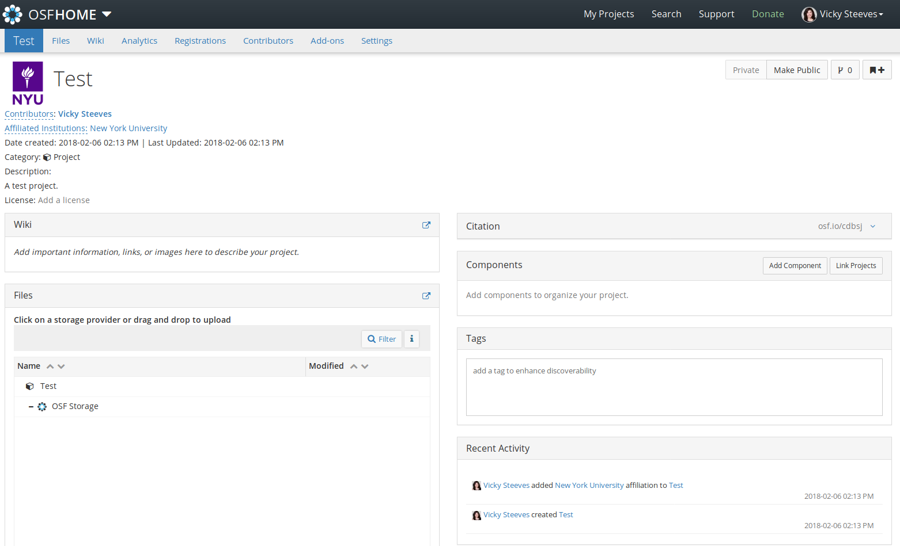
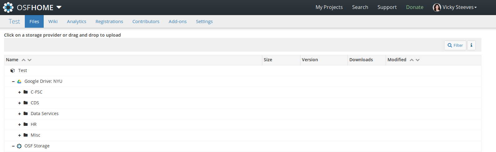
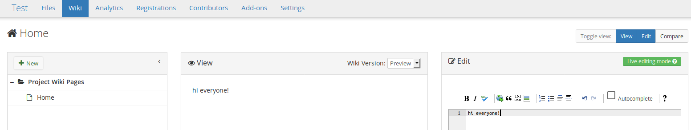

Research Project Management Using the Open Science Framework 
Vicky Steeves and Nick Wolf | February 06, 2018

Benefits and Challenges to Managing and Documenting Project Workflow
- Enable group collaboration while tracking contributions and controlling access
- Keep track of master copies of files as well as versions and backups
- Gather bird's eye views of resource allocation and time usage
- Allow for simultaneous preparation for data publishing and preservation
What to Look For
- Web-hosted vs. Self-Host vs. Desktop Environments
- Grant and Project Management Tools vs. File and Research Management vs. Experiment/"Research Process" Management
- Cost/License Products vs. Closed-Source Free Options vs. Open Source/Open Access
What to Look For
Whatever option you choose...
...beware of tools that do not allow you to export your data!
If this software/tool provider disappears, you need to maintain access to your data.
What is the Open Science Framework?

A free and open source project management tool that connects researchers to the tools they are already using to make management easier through the research cycle.
Why Use OSF?
- Preserve your current workflow, file types, and standard operating procedures
- Enhance those workflows by better documentation, sharing, and discovery of your research materials
- Gather together group permissions, various storage options, bibliographic management, and publication in one place
- OSF is the work of a non-profit, the Center for Open Science, dedicated to supporting open science using open-source tools
OSF Integrations with Research Tools

Getting Started: OSF at NYU
Sign up at osf.io using your NetID and create your account.
Click on "Sign In" and at the bottom of the sign-in box, the link for "Login Through Your Institution."

Setting Up a Project
Go to https://osf.io or just click "My Projects" on the top bar. 
Click "Create Project" and fill in the form.
Don't Be Afraid of How Blank It Looks...
Let's Add Collaborators
Click "add" button next to the title of the page. 
Search for the person to your right and add them.
Setting Up Accounts
Try adding an account of your own by clicking on your profile (top right hand corner), then "Settings," then "Configure Add-on Accounts." Click on "Connect Account" next to an addon.

Back to Your Project: Select Your Project Add-ons
Go to your project, click "Add-ons" in project navigation.

Adding Your Addons

Authorizing Your Addons
Read the terms, and agree if you feel comfortable.

Choose Your Folder
Click 'Configure Add-ons' and use the radio buttons to select the folder you wish to import.
Working with Your Files
Click on "Files" on Your Project Top Menu
From here, you can:
- See all files from OSF storage and any configured addons
- Drag and drop files into any kind of storage, OSF or otherwise
- Create folders in OSF storage for better organization

Tagging Files
When you click on a file in OSF, it renders right in-browser. On the bottom right is the "tag" field, where you can enter whatever you want.
Try adding 2 tags to your file and compare with the person to your right

Versioning Files
When you click on a file in OSF storage, you can also see and download all the versions of that file that have been uploaded.
THE CATCH: The file has to be uploaded with the same name!

Automating File Uploads/Downloads
Now, you use scripts in R or Python to interface with OSF storage. These are the two libraries, one for R, one for Python, that can help you make your workflow more efficient!
OSFR: R library to interface with OSF storage
devtools::install_github('chartgerink/osfr')
login()OSFCLIENT: Python library and command-line client for file storage on OSF
pip install osfclient
osf cloneDocumenting with the Wiki
This also has a robust versioning. And you can compare versions side-by-side.

Best Practices with the Wiki
Use the "Home" wiki page as a table of contents listing project goals, personnel, sub-components, and links to important files.

Components
Components are essentially "sub-projects" that can have their own set of collaborators, add-ons, and access controls.

Sharing
Everything (files, subcomponents, wiki docs) gets a short permalink in OSF.
That makes it easy to share via e-mail, Twitter, pastebins, etc.
You can also share projects via a view-only link, including an option to anonymize contributors for blind peer review.

Going Public
All OSF projects start private. We can make them public when we are ready and reap some benefits, like built-in analytics
 >
>
Publishing
When you want to publish your final product, you register it. All the files are pulled into an archive on OSF storage, and the project becomes read-only.
You can get a DOI for this project, and include it in a "Supplementary Materials Section" of a journal article.

Publishing via domain services
All you have to is go to the submission link (e.g. for LISSA, osf.io/preprints/lissa/submit) and select “Connect to existing OSF project”. You can then designate your front-facing document, and have your entire project seamlessly published into a domain-specific service!
Publishing via domain services
This is an example of a project (of mine). I was able to then publish my postprint in LISSA, with all my code, data, and documentation RIGHT BELOW the rendered PDF. This is a powerful way to do openness -- not just free-to-read articles, but holistic and seamless access to EVERYTHING associated with a research project.
Where to Get Help
Nick and I -- we can do 1-1 or small group sessions if you would like. Make an appointment with me via this form.
The Center for Open Science published help guides & FAQs linked on the OSF for you to take advantage of. The COS YouTube channel is also a great resource to learn more about the OSF, or other COS initiatives.
Thank you! Questions?
Email us: vicky.steeves@nyu.edu & nicholas.wolf@nyu.edu
Learn more about RDM: guides.nyu.edu/data_management
Get this presentation: guides.nyu.edu/data_management/resources
Make an appointment: guides.nyu.edu/appointment